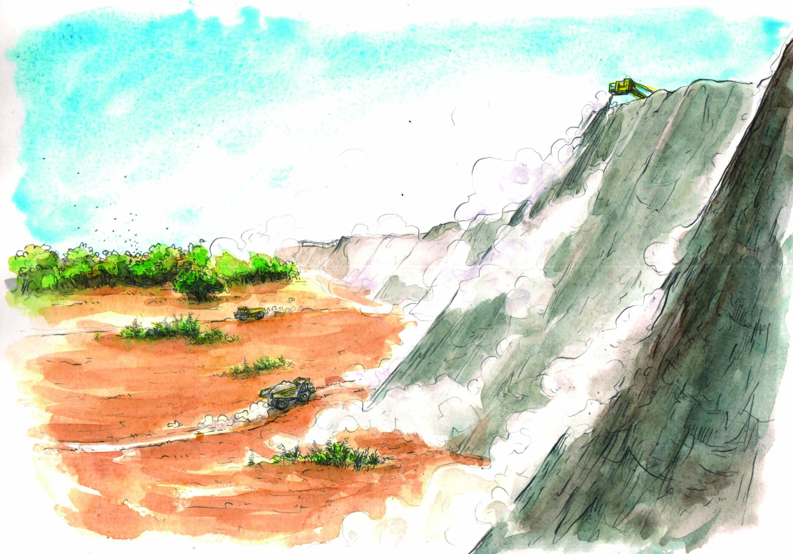

« Vous voyez toute cette poussière ? Nos animaux la boivent dans leurs abreuvoirs, nos enfants la respirent », s’inquiète une habitante de Glomel.

La mine d’Imerys contamine la réserve naturelle de Glomel
Des ruisseaux protégés, une réserve naturelle… et à quelques kms, une mine à ciel ouvert qui déverse dans la nature des métaux lourds jusqu’à 60 fois supérieures aux valeurs guides.